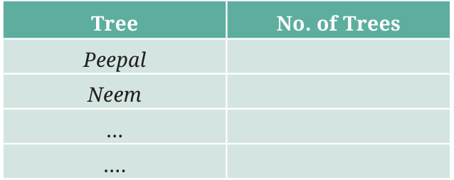
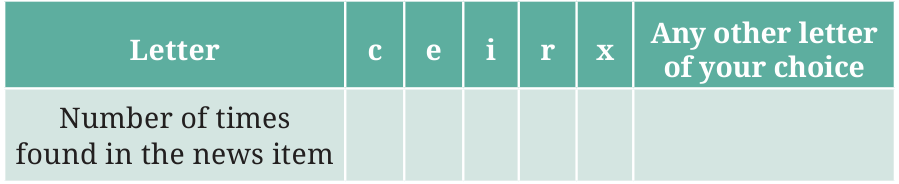

<!DOCTYPE html>
<html lang="en">
<head>
<meta charset="UTF-8">
<meta name="viewport" content="width=device-width,initial-scale=1">
<title>Figure it Out — Data Handling and Presentation</title>
<meta name="description" content="Class 6 Mathematics · Data Handling and Presentation · Figure it Out">
<link rel="icon" href="data:image/svg+xml,<svg xmlns='http://www.w3.org/2000/svg' viewBox='0 0 100 100'><text y='.9em' font-size='90'>📘</text></svg>">
<link rel="stylesheet" href="../../../assets/book.css">
<link rel="stylesheet" href="https://cdn.jsdelivr.net/npm/katex@0.16.11/dist/katex.min.css" crossorigin="anonymous">
</head>
<body>
<header class="topbar">
<div class="topbar-in">
  <div class="crumb">
    <span class="c1"><a href="../../../index.html">Library</a> · <a href="../../index.html">Class 6 Mathematics</a></span>
    <span class="c2">Data Handling and Presentation · Figure it Out</span>
  </div>
  <a class="tb-btn" data-nav="prev" href="../../04-data-handling-and-presentation/03-figure-it-out/index.html" title="Figure it Out">←</a>
  <details class="drawer"><summary class="tb-btn" title="Sections in this chapter">☰</summary>
<div class="drawer-panel"><div class="dh">Data Handling and Presentation</div><a href="../01-chapter-opener/index.html">Chapter opener; 4.1 Collecting and Organising Data</a><a href="../02-figure-it-out/index.html">Figure it Out</a><a href="../03-figure-it-out/index.html">Figure it Out</a><a href="../04-figure-it-out/index.html" aria-current="page">Figure it Out</a><a href="../05-pictographs-4.2/index.html">4.2 Pictographs</a><a href="../06-drawing-a-pictograph/index.html">Drawing a Pictograph</a><a href="../07-figure-it-out/index.html">Figure it Out</a><a href="../08-bar-graphs-4.3/index.html">4.3 Bar Graphs</a><a href="../09-figure-it-out/index.html">Figure it Out</a><a href="../10-drawing-a-bar-graph-4.4/index.html">4.4 Drawing a Bar Graph</a><a href="../11-figure-it-out/index.html">Figure it Out</a><a href="../12-artistic-and-aesthetic-considerations-4.5/index.html">4.5 Artistic and Aesthetic Considerations</a><a href="../13-figure-it-out/index.html">Figure it Out</a><a href="../14-infographics/index.html">Infographics</a><a href="../15-summary/index.html">Summary</a><a href="../16-solutions/index.html">CHAPTER 4 — SOLUTIONS</a></div></details>
  <a class="tb-btn" data-nav="next" href="../../04-data-handling-and-presentation/05-pictographs-4.2/index.html" title="4.2 Pictographs">→</a>
  <button class="tb-btn" data-theme-toggle title="Toggle light / dark" aria-label="Toggle light or dark theme">◐</button>
</div>
<div class="progress"><span style="width:34.0%"></span></div>
</header>
<main class="wrap">
<div class="sec-head">
  <p class="eyebrow"><a href="../index.html">Chapter 4 · Data Handling and Presentation</a></p>
  <h1>Figure it Out</h1>
  <p class="sec-meta">Textbook pages 4–6 · 5 figures</p>
</div>
<article class="prose">
<ul class="qlist">
<li><span class="mk">1.</span><span class="lt">Help her to figure out the following:</span></li>
<li><span class="mk">a.</span><span class="lt">The largest shoe size in the class is _________.</span></li>
<li><span class="mk">b.</span><span class="lt">The smallest shoe size in the class is _________.</span></li>
<li><span class="mk">c.</span><span class="lt">There are _________ students who wear shoe size 5.</span></li>
<li><span class="mk">d.</span><span class="lt">There are _________ students who wear shoe sizes larger</span></li>
</ul>
<p>than 4.</p>
<ul class="qlist">
<li><span class="mk">2.</span><span class="lt">How did arranging the data in ascending order help to</span></li>
</ul>
<figure class="fig side-fig"></figure>
<p>answer these questions?</p>
<ul class="qlist">
<li><span class="mk">3.</span><span class="lt">Are there other ways to arrange the data?</span></li>
<li><span class="mk">4.</span><span class="lt">Write the names of a few trees you see around you. When you</span></li>
</ul>
<p>observe a tree on the way from your home to school (or while walking from one place to another place), record the data and fill in the following table:</p>
<figure class="fig table-fig"></figure>
<ul class="qlist">
<li><span class="mk">a.</span><span class="lt">Which tree was found in the greatest number?</span></li>
<li><span class="mk">b.</span><span class="lt">Which tree was found in the smallest number?</span></li>
<li><span class="mk">c.</span><span class="lt">Were there any two trees found in the same numbers?</span></li>
<li><span class="mk">5.</span><span class="lt">Take a blank piece of paper and paste any small news item from</span></li>
</ul>
<p>a newspaper. Each student may use a different article. Now, prepare a table on the piece of paper as given below. Count the number of each of the letters ‘c’, ‘e’, ‘i’, ‘r’, and ‘x’ in the words of the news article, and fill in the table.</p>
<figure class="fig table-fig wide"></figure>
<ul class="qlist">
<li><span class="mk">a.</span><span class="lt">The letter found the most number of times is ________.</span></li>
<li><span class="mk">b.</span><span class="lt">The letter found the least number of times is ________.</span></li>
<li><span class="mk">c.</span><span class="lt">List the five letters ‘c’, ‘e’, ‘i’, ‘r’, ‘x’ in ascending order of</span></li>
</ul>
<p>frequency. Now, compare the order of your list with that of your classmates. Is your order the same or nearly the same as theirs? (Almost everyone is likely to get the order ‘x, c, r, i, e’.) Why do you think this is the case?</p>
<ul class="qlist">
<li><span class="mk">d.</span><span class="lt">Write the process you followed to complete this task.</span></li>
<li><span class="mk">e.</span><span class="lt">Discuss with your friends the processes they followed.</span></li>
<li><span class="mk">f.</span><span class="lt">If you do this task with another news item, what process</span></li>
</ul>
<p>would you follow?</p>
<h3 id="s-teacher-s-note">Teacher’s Note</h3>
<p>Provide more opportunities to collect and organise data. Ask students to guess what is the most popular colour, game, toy, school subject, etc., amongst the students in their classroom and then collect the data for it. It can be a fun activity in which they also learn about their classmates. Discuss how they can organise the data in different ways, each way having its own advantages and limitations. For all these tasks and the tasks under ‘Figure it Out’, discuss the tasks with the children and let them understand the tasks, and then let them plan and present their research processes and conclusions in the class.</p>
</article>
<nav class="pager"><a class="" data-nav="prev" href="../../04-data-handling-and-presentation/03-figure-it-out/index.html"><span class="dir">← Previous</span><span class="t">Figure it Out</span><span class="ch">Data Handling and Presentation</span></a><a class="nx" data-nav="next" href="../../04-data-handling-and-presentation/05-pictographs-4.2/index.html"><span class="dir">Next →</span><span class="t">4.2 Pictographs</span><span class="ch">Data Handling and Presentation</span></a></nav>
</main><footer class="site">Generated from the source textbook PDFs · text, figures and exercises belong to their respective publishers.</footer><script defer src="https://cdn.jsdelivr.net/npm/katex@0.16.11/dist/katex.min.js" crossorigin="anonymous"></script>
<script defer src="https://cdn.jsdelivr.net/npm/katex@0.16.11/dist/contrib/auto-render.min.js" crossorigin="anonymous"
  onload="renderMathInElement(document.body,{delimiters:[
    {left:'\\(',right:'\\)',display:false},
    {left:'$$',right:'$$',display:true},
    {left:'\\[',right:'\\]',display:true}],throwOnError:false,ignoredTags:['script','noscript','style','textarea','pre','code']})"></script>
<script src="../../../assets/book.js"></script>
<script defer src="../../../../assets/search.js"></script>
<script defer src="../../../../assets/screenshot.js"></script>
</body>
</html>
